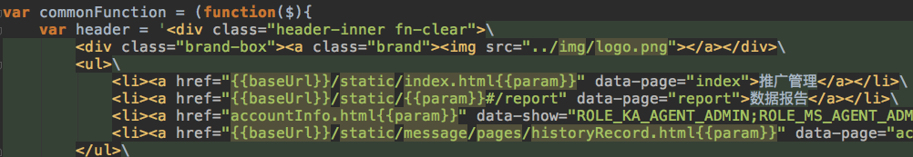
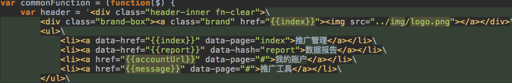
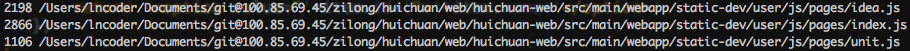

汇川投放前端重构
PROD.react+redux
react+redux
DEV.react+redux+webpack+koa(nodejs)
react+redux+webpack+koa(nodejs)
为何要重构?
重复的地方太多
路径:/static-dev/account/js/common/common.js

路径:/static-dev/user/js/common/common.js

路径:/static-dev/manager/js/common/common.js
可读性太差

结构松散
重构技术栈选择
React? Redux?
目录前后 Diff
Before.
After.
路由VS
Bf.http://100.85.69.70/ad/static/user/pages/index.html?userId=100001820
At.http://100.85.69.70/ad/static/index.html?userId=100001820#/spread?_k=rnjoq7
规范
遇到的问题
Optimization
Q&A